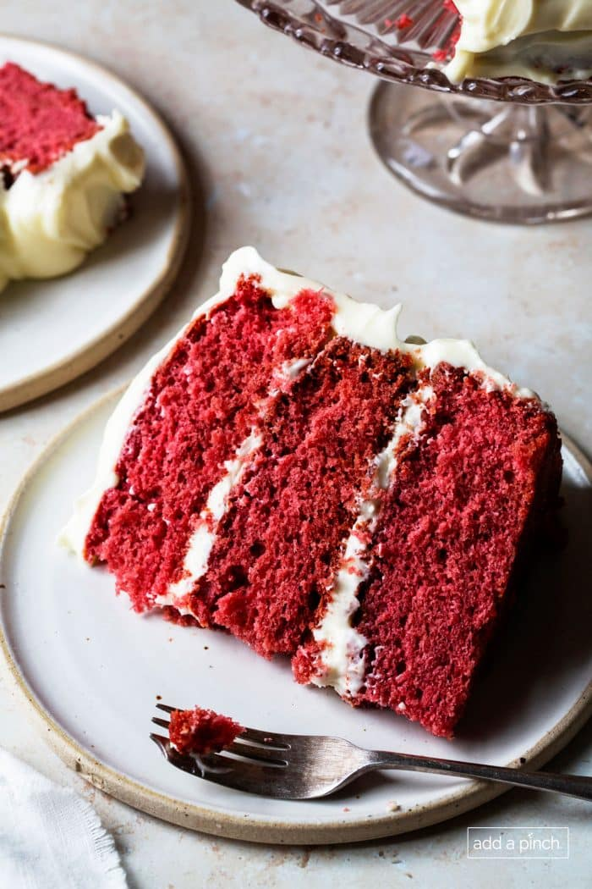

Red Velvet Cake

This delicious red velvet cake is soft, flufffy, and rich in flavor. It takes about 50 minutes to make and is able to feed 24, perfect for a small party. Have fun baking!!
Equipment
- 3 Cake Pans(8in)
- A Mixing Bowl
- A Whisk
Ingredients
- 1 1/2 cups sugar
- 1/2 cup shortening
- 2 ounces of red food coloring
- 2 large eggs at room temperature
- 2 tablespoons unsweetned cocoa powder
- 2 1/4 cups all-purpose flour
- 1 teaspoons salt
- 1 teaspoon baking soda
- 1 cup buttermilk
- 1 teaspoons vanilla extract
- 1 tablespoon white distilled vinegar
Ingredients for Cream Cheese Frosting
- 16 ounces cream cheese
- 1/2 cup softened butter
- 3 cups difted confectioner's sugar
- 1 1/2 teaspoons vanilla extract
Instructions
- Preheat oven to 350º F. Prepare three (8-inch) cake pans by brushing with homemade cake pan release (cake goop), spraying with nonstick baking spray, or by thoroughly greasing and flouring. Set aside.
- Cream vegetable shortening and sugar together until light and fluffy, about three minutes. Add eggs one at a time, completely incorporating after each addition.
- Make a paste of food coloring and cocoa powder and add to the mixture.
- Sift together flour and salt in a separate medium bowl, set aside. Pour buttermilk and vanilla into a measuring cup, set aside.
- Alternately, mix flour mixture and buttermilk mixture into shortening/sugar mixture, beginning and ending with flour. Scrape down sides of mixing bowl to ensure all ingredients are well incorporated.
- Reduce speed of mixer and stir in baking soda, making sure incorporated into batter. Then, stir in the vinegar, taking care not to beat hard or over mix.
- Evenly distribute into cake pans and bake 25-30 minutes, until toothpick inserted in the center comes out clean.
- Cool cake thoroughly before frosting.
Instructions for Cream Cheese Frosting
- Soften Ingredients: Ensure ingredients are softened to room temperature to prevent lumps.
- Cream together: In a large mixing bowl, beat cream cheese and butter together with a stand or hand mixer on medium speed for 3 minutes until smooth.
- Add sugar: Sift 3 cups of confectioner’s sugar and add 1/2 cup at a time, mixing on low speed to combine. After each cup, increase to high speed for 10 seconds to lighten.
- Incorporate vanilla: Add vanilla extract and beat until fluffy, about 1 minute.
- Adjust Consistency: For thinner frosting, add 1 tablespoon heavy cream; for thicker, add 1 tablespoon powdered sugar, mixing after each addition.
Back to Desserts